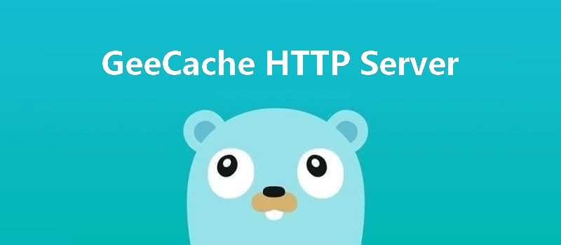

动手写分布式缓存 - GeeCache第三天 HTTP 服务端
7天用 Go语言/golang 从零实现分布式缓存 GeeCache 教程(7 days implement golang distributed cache from scratch tutorial)，动手写分布式缓存，参照 groupcache 的实现。本文介绍了如何使用标准库 http 搭建 HTTP Server，为 GeeCa…

本文是7天用Go从零实现分布式缓存GeeCache的第三篇。
- 介绍如何使用 Go 语言标准库
http搭建 HTTP Server - 并实现 main 函数启动 HTTP Server 测试 API，代码约60行
1 http 标准库
Go 语言提供了 http 标准库，可以非常方便地搭建 HTTP 服务端和客户端。比如我们可以实现一个服务端，无论接收到什么请求，都返回字符串 "Hello World!"
package main
import (
"log"
"net/http"
)
type server int
func (h *server) ServeHTTP(w http.ResponseWriter, r *http.Request) {
log.Println(r.URL.Path)
w.Write([]byte("Hello World!"))
}
func main() {
var s server
http.ListenAndServe("localhost:9999", &s)
}
- 创建任意类型 server，并实现
ServeHTTP方法。 - 调用
http.ListenAndServe在 9999 端口启动 http 服务，处理请求的对象为s server。
接下来我们执行 go run . 启动服务，借助 curl 来测试效果：
$ curl http://localhost:9999
Hello World!
$ curl http://localhost:9999/abc
Hello World!
Go 程序日志输出
2020/02/11 22:56:32 /
2020/02/11 22:56:34 /abc
http.ListenAndServe接收 2 个参数，第一个参数是服务启动的地址，第二个参数是 Handler，任何实现了ServeHTTP方法的对象都可以作为 HTTP 的 Handler。
在标准库中，http.Handler 接口的定义如下：
package http
type Handler interface {
ServeHTTP(w ResponseWriter, r *Request)
}
2 GeeCache HTTP 服务端
分布式缓存需要实现节点间通信，建立基于 HTTP 的通信机制是比较常见和简单的做法。如果一个节点启动了 HTTP 服务，那么这个节点就可以被其他节点访问。今天我们就为单机节点搭建 HTTP Server。
不与其他部分耦合，我们将这部分代码放在新的 http.go 文件中，当前的代码结构如下：
geecache/
|--lru/
|--lru.go // lru 缓存淘汰策略
|--byteview.go // 缓存值的抽象与封装
|--cache.go // 并发控制
|--geecache.go // 负责与外部交互，控制缓存存储和获取的主流程
|--http.go // 提供被其他节点访问的能力(基于http)
首先我们创建一个结构体 HTTPPool，作为承载节点间 HTTP 通信的核心数据结构（包括服务端和客户端，今天只实现服务端）。
day3-http-server/geecache/http.go - github
package geecache
import (
"fmt"
"log"
"net/http"
"strings"
)
const defaultBasePath = "/_geecache/"
// HTTPPool implements PeerPicker for a pool of HTTP peers.
type HTTPPool struct {
// this peer's base URL, e.g. "https://example.net:8000"
self string
basePath string
}
// NewHTTPPool initializes an HTTP pool of peers.
func NewHTTPPool(self string) *HTTPPool {
return &HTTPPool{
self: self,
basePath: defaultBasePath,
}
}
HTTPPool只有 2 个参数，一个是 self，用来记录自己的地址，包括主机名/IP 和端口。- 另一个是 basePath，作为节点间通讯地址的前缀，默认是
/_geecache/，那么 http://example.com/_geecache/ 开头的请求，就用于节点间的访问。因为一个主机上还可能承载其他的服务，加一段 Path 是一个好习惯。比如，大部分网站的 API 接口，一般以/api作为前缀。
接下来，实现最为核心的 ServeHTTP 方法。
// Log info with server name
func (p *HTTPPool) Log(format string, v ...any) {
log.Printf("[Server %s] %s", p.self, fmt.Sprintf(format, v...))
}
// ServeHTTP handle all http requests
func (p *HTTPPool) ServeHTTP(w http.ResponseWriter, r *http.Request) {
if !strings.HasPrefix(r.URL.Path, p.basePath) {
panic("HTTPPool serving unexpected path: " + r.URL.Path)
}
p.Log("%s %s", r.Method, r.URL.Path)
// /<basepath>/<groupname>/<key> required
parts := strings.SplitN(r.URL.Path[len(p.basePath):], "/", 2)
if len(parts) != 2 {
http.Error(w, "bad request", http.StatusBadRequest)
return
}
groupName := parts[0]
key := parts[1]
group := GetGroup(groupName)
if group == nil {
http.Error(w, "no such group: "+groupName, http.StatusNotFound)
return
}
view, err := group.Get(key)
if err != nil {
http.Error(w, err.Error(), http.StatusInternalServerError)
return
}
w.Header().Set("Content-Type", "application/octet-stream")
w.Write(view.ByteSlice())
}
- ServeHTTP 的实现逻辑是比较简单的，首先判断访问路径的前缀是否是
basePath，不是返回错误。 - 我们约定访问路径格式为
/<basepath>/<groupname>/<key>，通过 groupname 得到 group 实例，再使用group.Get(key)获取缓存数据。 - 最终使用
w.Write()将缓存值作为 httpResponse 的 body 返回。
到这里，HTTP 服务端已经完整地实现了。接下来，我们将在单机上启动 HTTP 服务，使用 curl 进行测试。
3 测试
实现 main 函数，实例化 group，并启动 HTTP 服务。
day3-http-server/main.go - github
package main
import (
"fmt"
"geecache"
"log"
"net/http"
)
var db = map[string]string{
"Tom": "630",
"Jack": "589",
"Sam": "567",
}
func main() {
geecache.NewGroup("scores", 2<<10, geecache.GetterFunc(
func(key string) ([]byte, error) {
log.Println("[SlowDB] search key", key)
if v, ok := db[key]; ok {
return []byte(v), nil
}
return nil, fmt.Errorf("%s not exist", key)
}))
addr := "localhost:9999"
peers := geecache.NewHTTPPool(addr)
log.Println("geecache is running at", addr)
log.Fatal(http.ListenAndServe(addr, peers))
}
- 同样地，我们使用 map 模拟了数据源 db。
- 创建一个名为 scores 的 Group，若缓存为空，回调函数会从 db 中获取数据并返回。
- 使用 http.ListenAndServe 在 9999 端口启动了 HTTP 服务。
需要注意的点： main.go 和 geecache/ 在同级目录，但 go modules 不再支持 import <相对路径>，相对路径需要在 go.mod 中声明： require geecache v0.0.0 replace geecache => ./geecache
接下来，运行 main 函数，使用 curl 做一些简单测试：
$ curl http://localhost:9999/_geecache/scores/Tom
630
$ curl http://localhost:9999/_geecache/scores/kkk
kkk not exist
GeeCache 的日志输出如下：
2020/02/11 23:28:39 geecache is running at localhost:9999
2020/02/11 23:29:08 [Server localhost:9999] GET /_geecache/scores/Tom
2020/02/11 23:29:08 [SlowDB] search key Tom
2020/02/11 23:29:16 [Server localhost:9999] GET /_geecache/scores/kkk
2020/02/11 23:29:16 [SlowDB] search key kkk
节点间的相互通信不仅需要 HTTP 服务端，还需要 HTTP 客户端，这就是我们下一步需要做的事情。